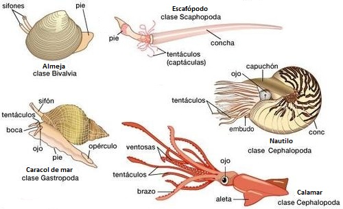

Moluscos
Los moluscos (Mollusca, del latín mollis, "blando") son un filo formado por animales invertebrados de simetría bilateral de cuerpo blando, desnudo o protegido por una concha, que incluye a caracoles, almejas, pulpos, calamares y babosas.
 Una de las características más reconocibles de los moluscos es su concha. Algunos moluscos, como los
caracoles y las almejas, tienen una concha externa que les proporciona protección y soporte. Por
otro lado, animales como los pulpos y los calamares tienen cuerpos blandos y carecen de concha
externa, aunque pueden tener una concha interna en algunos casos o carecer de ella.
Una de las características más reconocibles de los moluscos es su concha. Algunos moluscos, como los
caracoles y las almejas, tienen una concha externa que les proporciona protección y soporte. Por
otro lado, animales como los pulpos y los calamares tienen cuerpos blandos y carecen de concha
externa, aunque pueden tener una concha interna en algunos casos o carecer de ella.
Otra característica de los moluscos es el pie muscular. Este órgano locomotor está dotado de una musculatura compleja y potente y se diversificó mucho en este grupo de animales a lo largo de la evolución, dando lugar al pie excavador de las almejas,a los tentáculos de los cefalópodos (pulpos y calamares) o el pie nadador de algunos organismos que habitan cerca de la superficie del mar. 
La alimentación de los moluscos es diversa. Algunos moluscos son herbívoros y se alimentan de algas y plantas marinas, mientras que otros son carnívoros y se alimentan de otros invertebrados o pequeños peces. Los moluscos filtradores, como las almejas y los mejillones, se alimentan filtrando partículas de comida del agua. En todos los casos, poseen un órgano de alimentación llamado rádula, similar a una cinta con pequeños dientes, el cual es una característica única del reino animal.
Esquema de la rádula de un caracolLa reproducción de los moluscos es exclusivamente sexual y varía según la especie; pueden ser unisexuados (hembras y machos) o como en el caso de la mayoría de los caracoles y babosas, hermafroditas con capacidad de autofecundación o sin ella. La fertilización, a su vez, puede ser externa (liberación de las gametas al agua) o interna.
Los moluscos son animales importantes en los ecosistemas marinos. Algunos actúan como filtradores, ayudando a limpiar el agua al eliminar partículas en suspensión y nutrientes no deseados. Además, las conchas de los moluscos proporcionan hábitats para otros organismos marinos y contribuyen a la formación de arrecifes.

Algunos moluscos, como las ostras y los calamares, también son apreciados por los seres humanos como alimentos y se cultivan en acuicultura. Sin embargo, la sobrepesca y la degradación del hábitat representan amenazas para algunas especies de moluscos, lo que destaca la importancia de la conservación y la gestión sostenible de estos recursos.